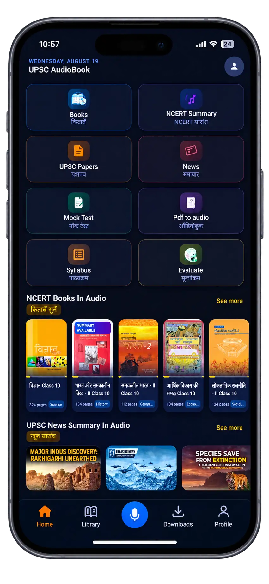

Turn every moment into a study session. NCERT audiobooks, daily current affairs, AI-powered answer evaluation & mock tests — all designed for aspirants on the go.

From NCERT foundations to current affairs mastery — we've built the complete audio toolkit for serious aspirants.
Complete Class 6–12 NCERT books converted into professional audiobooks. Available in both Hindi and English for every major subject.
Engaging, narrative-style chapter summaries that turn complex topics into memorable stories. Perfect for quick revision before exams.
Stay updated with daily audio summaries of important current affairs. No more spending hours reading multiple newspapers.
Get instant AI-powered feedback on your Mains answer writing. Improve your content, structure, and presentation systematically.
Prelims-style mock tests designed to simulate real UPSC exam conditions. Track your progress and identify weak areas.
Download your favorite chapters and study without internet. With variable playback speeds (0.75x–2x), sleep timer, and bookmarks.
Get started in under a minute. Your UPSC preparation transformation begins now.
Install the app for free from Google Play Store. Create your account in seconds and set your exam target.
Choose from History, Geography, Polity, Economy, Science & more. Start with NCERT foundations or jump to current affairs.
Put on your headphones and absorb knowledge while commuting, exercising, or doing chores. Track your daily streaks and XP!
Comprehensive audio content structured to cover the entire UPSC Civil Services syllabus.
Google Play Store पर aspirants की असली reviews पढ़ें — ये लोग अपनी UPSC journey बदल रहे हैं।
"मैं रोज़ 2 घंटे ट्रेन में सफर करता हूँ, पहले ये time बस waste होता था। जब से ये app download किया है, NCERT History और Polity के chapters सुनते-सुनते पूरे हो गए। Audio quality बहुत अच्छी है, बिल्कुल किसी teacher की class जैसा लगता है 🎧"
"Best UPSC app! 🙌 मैं working professional हूँ, office के बाद पढ़ने का time नहीं मिलता था। अब morning walk, cooking, gym — हर जगह earphone लगाकर current affairs और NCERT सुनती हूँ। AI Mains evaluation ने तो मेरी answer writing ही बदल दी। Highly recommended! ❤️"
"Finally someone made this! I've been looking for a proper UPSC audiobook app for so long. The NCERT chapters are narrated professionally, not robotic TTS. The story-style summaries are genius — I remember facts so much better now. Offline mode is a lifesaver during my village postings."
"Hindi medium वालों के लिए ये app वरदान है 🙏 हमें हमेशा English apps से काम चलाना पड़ता था, लेकिन इसमें हर chapter हिंदी में available है। Geography और Economics के chapters बहुत detail में हैं। Mock test भी UPSC pattern जैसे हैं। इतना अच्छा app free में — सच में unbelievable!"
"Great concept and execution! I use this for my daily current affairs dose — the audio summaries save me at least 1 hour every morning vs reading newspapers. The mock tests are well-curated too. Only wish: please add more optional subjects! Adding that would make this a solid 5-star app. 💯"
"मेरा छोटा भाई गाँव में रहता है, वहाँ coaching नहीं है। मैंने उसे ये app recommend किया — अब वो खेत में काम करते हुए भी NCERT सुनता है 😂 Playback speed 1.5x पर सुनता है, बोलता है revision बहुत fast हो जाती है। Thank you Upscaudiobook team! 🇮🇳"
Yes! The core features including NCERT audiobooks, daily current affairs, and mock tests are completely free to use. We believe every aspirant deserves access to quality study material regardless of their financial situation.
We cover NCERT textbooks from Class 6 to Class 12 across all major subjects relevant to UPSC — including History, Geography, Political Science, Economics, and Science. Both Hindi and English versions are available.
Absolutely! You can download chapters for offline listening. This is perfect for areas with poor connectivity or when you want to save mobile data. You can also adjust playback speed from 0.75x to 2x.
Simply write or upload your answer, and our AI evaluates it based on UPSC Mains standards — checking content accuracy, structure, keywords, and presentation. You get detailed feedback with suggestions for improvement within seconds.
Currently, UPSC Audiobook is available exclusively on Android via Google Play Store. An iOS version is planned for future release. Stay tuned!
Join thousands of aspirants who are making the most of every minute. Download now and start your audio learning journey today.
Download Free on Google Play Available on Android • Free Forever